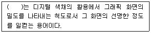

시각디자인산업기사 (2018-04-28 기출문제)
1과목: 색채학
1. 다음 중 푸르킨예 현상은?
- 어떤 조명 아래에서 물체색을 오랫동안 보면 그 색의 감각이 약해지는 현상
- 수면에 뜬 기름이나, 전복껍질에서 나타나는 색의 현상
- 어두워질 때 단파장의 색이 잘 보이는 현상
- 노랑, 빨강, 초록 등 유채색을 느끼는 세포의 지각 현상
(정답률: 69%)

2. 색채를 표시하는 방법 중 인간의 색 지각을 기초로 지각적 등보성에 근거한 것은?
- 현색계
- 혼색계
- 혼합계
- 표준계
(정답률: 70%)
3. 다음 중 현색계(color appearance system)와 관계없는 것은?
- 오스트발트 표색계
- CIE 표색계
- Munsell 표색계
- NCS 표색계
(정답률: 70%)
4. 태양빛을 프리즘으로 분광했을 때 스펙트럼 상에 존재하지 않는 색은?
- 노랑
- 파랑
- 초록
- 회색
(정답률: 96%)
5. 색상, 명도, 채도 순으로 표시하는 색명은?
- 오스트발트 색체계
- 관용색명
- 고유색명
- 먼셀색체계
(정답률: 81%)
6. 다음 디지털 이미지에 대한 설명 중 틀린 것은?
- 1bit 이미지는 흑, 백으로 이루어진 이미지이다.
- 1byte는 8bit이다.
- 16bit 이상의 색채 이미지를 Full color 이미지라고 한다.
- GIF 이미지 형식은 256단계의 색으로 구성된다.
(정답률: 64%)
7. 다음 설명 중 조화를 이루지 못하는 것은?
- 등색상 3각형의 등흑, 등백 계열의 색들은 서로 조화된다.
- 어떤 순색과 백색 및 흑색은 조화된다.
- 무채색은 특정색과 조화되므로 유채색과 함께 하면 조화된다.
- 저채도의 약한 색은 면적을 넓게 고채도의 강한 색은 면적을 좁게 하면 조화된다.
(정답률: 51%)
8. 색팽이에 2가지 색을 칠하면 빨리 회전시켰을 때 나타나는 현상과 관계없는 것은?
- 회전혼합
- 감산혼합
- 중간혼합
- 계시혼합
(정답률: 59%)
9. 백색 광원으로부터 빛 Yellow 필터를 투과한 후 다시 Magenta 필터를 투과했을 때 최종적으로 보여지는 광원의 색은?
- White
- Yellow
- Green
- Red
(정답률: 64%)
10. 분리배색효과에 대한 설명이 틀린 것은?
- 색상과 톤이 유사한 배색일 경우 세퍼레이션 컬러를 선택하여 명쾌한 느낌을 줄 수 있다.
- 스테인드글라스는 세퍼레이션 배색으로 무채색을 이용한 금속색을 적용한 대표적인 예이다.
- 색상과 톤의 차이가 큰 콘트라스트 배색인 빨강과 청록사이에 검은색을 넣어 온화한 이미지를 연출한다.
- 슈브럴(M. E. Chevreul)의 조화이론을 기본으로 한 배색방법이다.
(정답률: 60%)
11. 무채색에 관한 내용으로 옳은 것은?
- 채도와 명도만 있는 색이다.
- 백색, 회색, 청색을 말한다.
- 색상과 명도만 있는 색이다.
- 채도가 없다.
(정답률: 77%)
12. 사람이 어두운 색 옷을 입으면 얼굴이 희게 보이고, 밝은 색 옷을 입으면 얼굴이 검게 보이는 현상은?
- 명도대비
- 채도대비
- 색상대비
- 계시대비
(정답률: 87%)
13. 유채색의 명도 및 채도에 관한 수식어 중 가장 채도가 높은 색은?
- vivid
- light
- deep
- pale
(정답률: 80%)
14. 먼셀(Munsell)의 색체계에서 가장 채도가 높은 색은?
- 빨강(5R)
- 연두(5GY)
- 초록(5G)
- 자주(5RP)
(정답률: 84%)
15. 빛의 특성에 관한 설명 중 올바른 것은?
- 파장에 따라 서로 다른 색감을 만든다.
- 파동성이 없다.
- 프리즘에 의해 둥근때를 형성한다.
- 물체에 닿으면 모두 반사된다.
(정답률: 83%)
16. 다음 ( )안에 들어갈 알맞은 것은?

- 화소
- 조도
- 해상도
- 음영도
(정답률: 84%)
17. 여러 대비현상을 기술한 내용 중 잘못된 것은?
- 같은 색이라도 면적이 큰 경우 더욱 밝고 선명하게 보이는 현상을 면적대비라고 한다.
- 어떤 두 색이 가까이 있을 때 그 경계 부분에서 나타나는 대비현상이 먼 곳보다 강하게 일어나는 것을 연변대비라고 한다.
- 서로 보색관계인 두 색이 있을 때 서로의 영향으로 색상이 다른 색상으로 보이는 현상을 보색대비라고 한다.
- 명도가 서로 다른 두 색이 있을 때 밝은 색은 더 밝게, 어두운 색은 더 어둡게 보이는 것을 명도대비라고 한다.
(정답률: 63%)
18. 뉴턴의 1660년경 빛의 굴절현상을 이용하여 프리즘으로 백색광을 분해하였는데 이때 파장별 분광되어 나오는 빛의 파장 중 장파장에 속하는 색은?
- 보라
- 노랑
- 빨강
- 초록
(정답률: 75%)
19. 저드(Judd)가 주장한 색채조화론의 원리에 해당되지 않는 것은?
- 질서의 원리
- 친근성의 원리
- 유사성의 원리
- 모호성의 원리
(정답률: 81%)
20. 문, 스펜서의 색채조화론에서 설명한 부조화 종류가 아닌 것은?
- 제1부조화
- 제2부조화
- 제3부조화
- 눈부심
(정답률: 70%)
2과목: 인쇄 및 사진기법
21. 특정한 파장범위 내에서 각 파장에 대해 거의 같은 정도로 투과량을 감소시킴으로써 색균형에는 영향을 주지 않는 필터는?
- SL 필터
- CC 필터
- ND 필터
- PL 필터
(정답률: 46%)
22. 사진이 발명되기 이전부터 많은 화가들이 드로잉에 이용해 온 현대 카메라의 효시는?
- 뷰 카메라(View Camera)
- 카메라 옵스큐라(Camera Obscura)
- 레인지 파인더 카메라(Range finder Camera)
- 반사식 카메라 (Reflex Camera)
(정답률: 55%)
23. 간접 인쇄 방식으로 잉크 전이량이 적으며 다른 판식에 비하여 내쇄력이 약하지만 부드러운 인쇄물을 제작하기 쉬운 인쇄방식은?
- 볼록판 인쇄
- 오목판 인쇄
- 스크린 인쇄
- 평판인쇄
(정답률: 43%)
24. 컬러 네거티브 필름에서 블루(B)광선은 어떤 색으로 발색하는가?
- 시안(C)
- 마젠타(M)
- 블랙(Black)
- 옐로우(Y)
(정답률: 59%)
25. 제책의 종류에 해당되지 않는 것은?
- 양장
- 동정
- 호부장
- 무선철
(정답률: 77%)
26. 다음 중 유기안료는?
- 감청
- 리솔레드
- 티탄화이트
- 카본블랙
(정답률: 56%)
27. 물체를 일정한 방향으로 보았을 때 그 물체의 관측 방향에 수직인 단위면적당 밝기를 지칭하는 말은?
- 휘도(luminance)
- 광속(luminous flux)
- 광도(luminous intensity)
- 조도(illumination intensity)
(정답률: 45%)
28. 일반적으로 사용하는 35mm 필름의 화면 크기(size)는?
- 24×36mm
- 36×48mm
- 48×56mm
- 56×78mm
(정답률: 57%)
29. 보통 흑백 필름의 인화용으로 사용되는 가스라이트 인화지의 현상온도(℃)로 가장 적합한 것은?
- 13~15℃
- 18~20℃
- 23~25℃
- 27~30℃
(정답률: 53%)
30. 다음 감광재료 중 네거티브(negative)형 PS판과 와이프온판에 가장 많이 사용되는 것은?
- O-나프토퀴논디아지드
- 폴리계피산비닐
- 디아조 수지
- 신나밀 수지
(정답률: 48%)
31. 인쇄의 5요소에 해당하는 것은?
- 기술자, 잉크, 종이, 인쇄기계, 피인쇄체
- 기술자, 종이, 잉크, 원고 인쇄기계
- 인쇄판, 종이, 잉크, 인쇄기계, 피인쇄체
- 인쇄판, 잉크, 피인쇄체, 인쇄기계, 원고
(정답률: 60%)
32. 컬러필름 현상 시 미노출된 할로겐하은염(AgX)의 제거와 동시에 탈은(desilverizing)을 하는 과정은?
- 현상, 발색
- 표백, 정착
- 수세, 건조
- 발색, 수세
(정답률: 53%)
33. 판면의 화선부가 오목하게 패여 있는 부분에 잉크가 채워져 피인쇄체로 옮겨짐으로써 인쇄가 되는 방식으로 인쇄물의 색채가 매우 풍부하며 사진 인쇄에 적합한 인쇄 방식은?
- 콜로타이프 인쇄
- 스크린 인쇄
- 그라비어 인쇄
- 플렉소 인쇄
(정답률: 75%)
34. MQ현상액의 주약은?
- 메톨 + 티오황산나트륨
- 메톨 + 하이드로퀴논
- 메톨 + 페니돈
- 페니돈 + 하이드로퀴논
(정답률: 79%)
35. 그라비어 잉크의 일반적인 건조 형식은?
- 증발 건조형
- 냉각 건조형
- 산화중합 건조형
- 침투 건조형
(정답률: 44%)
36. 피사체를 촬영할 때 감도 100, 조리개 값 5.6, 셔터스피트 1/60초가 적정노출이었다면 감도를 그대로 유지한 채 조리개 값을 2.8로 변경하였을 때 적정노출을 위한 셔터 스피드(초)는? (단, 피사체에 대한 촬영거리는 동일하다.)
- 1/250
- 1/500
- 1/125
- 1/30
(정답률: 41%)
37. 낮은 콘트라스트 사진을 얻는데 적합한 흑백 현상액은?
- 조립자 현상액
- 경조 현상액
- 증감 현상액
- 연조 현상액
(정답률: 36%)
38. 사진을 서로 이어 붙이거나 다중 인화 또는 다중 노출시켜 새로운 시각 효과를 구성하기 위해 제작된 작품 또는 기법은?
- 소프트 포커싱(soft focusing)
- 릴리프 포토(relief photo)
- 포토 몽타주(photo montage)
- 디포메이션(deformation)
(정답률: 69%)
39. 가시광선 전 영역에 감광 파장역을 갖는 리스필름의 감색성은?
- 레귤러(regular)형
- 오르토크로매틱(orthochromatic)형
- 팬크로매틱(panchromatic)형
- UV(Ultra Violet)형
(정답률: 40%)
40. 다음 중 신문, 잡지, 교과서 등의 본문용 서체로 많이 사용되는 것은?
- 명조체
- 청조체
- 송조체
- 그래픽체
(정답률: 95%)
3과목: 시각디자인론
41. 대상물의 보이지 않는 부분의 모양을 표시하는데 쓰이는 선은?
- 파선
- 실선
- 2점 쇄선
- 1점 쇄선
(정답률: 50%)
42. 타이포그래피의 선구적인 주자와 활자의 다이나믹한 시각효과를 창출해낸 유럽의 디자이너는?
- 얀 치홀트(Jan Tschichold)
- 르 꼬르뷔제(Le Corbusier)
- 막스 빌(Max Bill)
- 미스 반 델 로에(Mies van der Rohe)
(정답률: 31%)
43. 다음 중 각국에서 일어난 디자인 운동과 나라가 바르게 연결된 것은?
- Art Nouveau - 미국
- Jugendstil - 오스트리아
- Sezession - 독일
- De Stijl - 네덜란드
(정답률: 47%)
44. 헝가리 출신의 바우하우스 교수였으며 회화, 사진, 영화에 깊은 관심을 갖았던 인물은?
- 모홀리나기(Moholy Nagy)
- 칸딘스키(Kandinsky)
- 그로피우스(Gropius)
- 파울 클레(Paul Klee)
(정답률: 49%)
45. 물체의 아래쪽에서 바라본 모양을 무슨 도면이라 하는가?
- 배면도
- 저면도
- 후면도
- 평면도
(정답률: 45%)
46. 해칭선의 용도에 대한 설명 중 옳은 것은?
- 기술, 기호 등을 표시하기 위하여 끌어내는 데 쓰인다.
- 대상물의 보이지 않는 부분의 모양을 표시하는 데 쓰인다.
- 도형의 한정된 특정 부분을 다른 부분과 구별하는 데 쓰인다.
- 대상물이 보이는 부분의 겉모양을 표시하는데 쓰인다.
(정답률: 48%)
47. 기업의 CI도입 효과로 적합하지 않은 것은?
- 대중에게 전달하는 커뮤니케이션 기능을 약화시킨다.
- 기업의 마케팅 전략을 유리하게 이끌 수 있다.
- 경쟁 업체와의 식별을 명확하게 해 준다.
- 효율적인 조직 강화에 크게 기여할 수 있다.
(정답률: 87%)
48. 기업이 소비자와 사회에 대해 일관된 이미지를 만들기 위한 종합적 표현 정책은?
- Symbol Mark
- Character
- Publicity
- Design Policy
(정답률: 44%)
49. 대상을 지각할 때 일정불변하게 지각되지 않고 심리상태, 과거의 기억, 관심, 주의, 흥미 등이 복합된 활동에 좌우된다는 형태 지각의 심리 이론은?
- 막스 빌의 조형 이론
- 게슈탈트 이론
- 루빈의 이론
- 뮬러, 라이어 이론
(정답률: 81%)
50. 미국의 기호학자 퍼스(Peirce)가 제시한 3가지 유형의 일반적 기호가 아닌 것은?
- 도상(Icon)
- 지표(Index)
- 로고(Logo)
- 상징(Symbol)
(정답률: 39%)
51. 독일공작연맹에 관한 설명 중 옳은 것은?
- 예술과 공업을 구분하여 철저한 장인교육을 실시하였다.
- 헤르만 무테지우스(H. Muthesius)는 영국의 기계화 가능성과 기능적 우수성을 도입하여 근대화에 주력하였다.
- 표준형의 설정인식이 높아지고, 기계화로 예술, 공예품 생산에 정확성을 높였다.
- 건축, 산업 제품에서부터 하이패션에 이르기까지 디자인의 전 분야에 영향을 주었고 기능주의적 디자인의 개념으로 널리 퍼져 나갔다.
(정답률: 42%)
52. 루빈(Rubin)의 항아리와 가장 관계있는 것은?
- 형태 지각의 그루핑
- 명도 대비에 의한 진퇴원리
- 바탕과 도형의 형태 지각
- 부분과 모서리의 관계
(정답률: 55%)
53. 디자인 관리 측면의 프로세스로 가장 바람직한 것은?
- 계획 → 시장조사 → 아이디어 수집 → 아이디어 확정 → 시안제작 → 프레젠테이션 → 생산/품질관리 → 종합평가
- 시장조사 → 아이디어 수집 → 계획 → 아이디어 확정 → 시안제작 → 프레젠테이션 → 생산/품질관리 → 종합평가
- 계획 → 시장조사 → 아이디어 수집 → 아이디어 확정 → 시안제작 → 생산/품질관리 → 종합평가 → 프레젠테이션
- 계획 → 아이디어 확정 → 아이디어 수집 → 시장조사 → 시안제작 → 프레젠테이션 → 생산/품질관리 → 종합평가
(정답률: 68%)
54. 황금분할(Golden Section)에 의한 비례는?
- 1 : 0.618
- 1 : 1.618
- 1 : 2.618
- 1 : 3.618
(정답률: 88%)
55. 다음 중 시각디자인 분야에 속하는 것은?
- 자동차와 가전제품의 기능이해와 모델링
- 주택의 인테리어 설계 및 가구의 구성과 배치
- 전시장의 작품 디스플레이와 조명연출
- 책과 잡지의 출판을 위한 편집과 인쇄제작
(정답률: 79%)
56. 게슈탈트 형태변화에 대한 연구법칙과 관련이 없는 것은?
- 절대성의 요인
- 유사성의 요인
- 근접성의 요인
- 폐쇄성의 요인
(정답률: 62%)
57. 다음 국가 중 현대 디자인의 방향이 성능을 강조하는 과학적 방향보다 인간의 감각과의 관계를 더 중요시하는 예술적 방향으로 흐른 곳은?
- 미국
- 일본
- 스칸디나비아
- 이태리
(정답률: 44%)
58. 경영이념, 경영상의 방침, 계획, 사회적 책임감이나 사명 등을 주체로 하는 광고는?
- PR (Public Relation)
- PROPAGANDA
- PUBLICITY
- DM(Direct Mail)
(정답률: 67%)
59. 19세기 중반에 면직물 산업의 대외경쟁력을 높이기 위해 최초로 디자인 개념을 도입한 나라는?
- 영국
- 미국
- 독일
- 일본
(정답률: 54%)
60. 극도의 미학적 축소를 지향하고 최소한의 장식과 미학으로 처리했던 사조는?
- 미니멀리즘
- 팝아트
- 포스트모더니즘
- 유토피아
(정답률: 80%)
4과목: 시각디자인실무 이론
61. 다음 중 마케팅(marketing)의 정의로 가장 알맞은 것은?
- 개인이나 조직의 이익을 위하여 제품, 서비스를 개발 하여 이를 촉진 및 유통시키는 활동을 계획하고 실천하는 과정
- 단체를 조직하고 통제하여 경쟁전략을 추구하고 유사한 특징을 갖는 단체의 우위를 서기 위한 과정
- 표본조사를 통해 동기와 행동의 결론을 연구하여 도출하는 과정
- 조직의 팀 구성원을 통일된 목적에 따라 활동영역을 명확히 하는 과정
(정답률: 88%)
62. 그래픽 파일 포맷의 하나인 PSD에 대한 설명으로 옳은 것은?
- 레이어, 패스, 채널 등의 정보도 함께 저장할 수 있다.
- 16비트 컬러를 사용한다.
- 압축을 하여도 이미지에 손실이 발생하지 않는다.
- 압축률을 변화시켜 파일의 크기를 조절할 수 있다.
(정답률: 85%)
63. 기업 상품광고를 잡지광고로 하고자 할 때 다음 중 일반적으로 가장 효과가 큰 지면은?
- 내지면
- 표지2면
- 표지3면
- 표지4면
(정답률: 51%)
64. POP(Point of Purchase)에 관한 설명으로 적합한 것은?
- 구매시점 광고라고 하며 구매자가 TV, 잡지, 옥외광고를 통하여 이루어지는 광고이다.
- 구매시점 광고로 소매점의 점두 또는 점내에서 하는 소매점 광고이다.
- POP광고라는 개념이 성립된 것은 1970년대 후반 미국에서이다.
- POP광고 전략에서 가장 중점을 두어야 할 대상은 판매의 편의성이다.
(정답률: 52%)
65. 신제품 개발의 중요성에 관한 설명으로 거리가 먼 것은?
- 기업체의 안정과 발전에 기여
- 자사의 기존제품과 경쟁
- 시장구조 변화에 대한 빠른 대응
- 제품의 수명주기 및 이익주기에 대한 대응
(정답률: 78%)
66. 컴퓨터 모니터가 재현하는 색의 특징을 설명한 것으로 틀린 것은?
- 모니터의 색은 빨강, 녹색, 파란색의 혼합으로 만들어 진다.
- 컴퓨터 비트심도가 높아질수록 모니터가 재현할 수 있는 색도 증가한다.
- 모니터의 색들은 빛의 조합으로 감법혼합에 해당된다.
- 모니터의 모든 색이 혼합되면 흰색이 된다.
(정답률: 78%)
67. 신제품에 대한 소비자의 반응을 알아보기 위해 한 쌍의 반대 형용사를 양극에 놓고 두 대상의 위치를 동일한 의미 공간 내에서 두 형용사의 편중 정도를 알아보고 다차원의 공간으로 평가하는 조사 방법은?
- 평가 스케일(evaluation scale)
- 의미분별 척도법(semantic differential scale)
- 순위 차트(ranking chart)
- 평가 매트릭스(evaluation matrix)
(정답률: 58%)
68. 초대형으로 확대된 투명컬러 필름의 디스플레이를 말하는 것으로 공항이나 지하도 등지에서 쉽게 발견할 수 있는 옥외광고는?
- 와이드 컬러
- 파라온
- 네온사인
- 맥스비전
(정답률: 62%)
69. 아이덴티티 디자인(Identity Design)에 있어서 심벌, 로고 등을 상호 유기적인 응용형태로 조합하여 활용규정으로 만들어 놓은 것을 일컫는 말은?
- 패턴(Pattern)
- 엠블렘(Emblem)
- 스테이셔너리(Stationery)
- 시그니처(Signature)
(정답률: 70%)
70. 교통표지판처럼 어떤 행위를 지시하거나 금지할 때의 표시 방법은?
- 실제적 표시
- 설명적 표시
- 통념적 표시
- 규약적 표시
(정답률: 71%)
71. 기업 아이덴티티(CI)에 관한 설명으로 옳지 않은 것은?
- CI는 기업 자체와 존재의 본질 간의 동질화와 함께 비교 대상과의 차별화라는 의미를 동시에 내포한다.
- CI는 마케팅 증진만을 위한 상품의 얼굴이자 말없는 세일즈맨의 역할을 한다.
- CI가 형성되기 위해서는 일관성과 지속성이라는 두 가지 요소가 전제되어야 한다.
- 구내에서 최초로 CI가 도입된 사례로는 1936년 버드나무를 형상화하여 심벌마크로 제정하고 녹색을 기업의 색상으로 사용한 '유한양행'을 들 수 있다.
(정답률: 77%)
72. 신문광고에서 내용적 요소에 속하는 것은?
- 캡션
- 로고타입
- 보더라인
- 일러스트레이션
(정답률: 58%)
73. 국제교류에 있어 언어의 장벽을 극복하기 위해 픽토그램(Pictogram)이 처음으로 유효하게 사용된 국제행사는?
- 1948년 런던올림픽
- 1967년 몬트리올 박람회
- 1969년 멕시코시티 올림픽
- 1970년 오사카 EXPO
(정답률: 67%)
74. 제품의 인지도를 확대시켜 디자인의 구별성, 차별성 및 특이성으로 판매의 성공을 기하도록 하는 전략은?
- 광고(Advertising)
- 네이밍(Naming)
- 프로모션(Promotion)
- B.I(Brand Identity)
(정답률: 35%)
75. 그래픽 심벌(graphic symbol)에 대한 개념이 틀린 것은?
- 비주얼 심벌(visual symbol)이라고도 부른다.
- 인간이 서로의 의사 전달을 가장 정확하고 빠르게 할 수 있는 수단이다.
- 시각전달의 기능을 목적으로 하고 있다.
- 기능적, 물리적으로 반드시 단순해야 한다.
(정답률: 63%)
76. 두 개 이상의 개체가 기호를 매개로 하여 정보, 감정, 지식, 등을 공유하는 과정은?
- Marketing
- Communication
- Design
- Advertising
(정답률: 89%)
77. 컴퓨터 사용자가 그림이 들어가는 문서를 제작할 때 편리하게 이용할 수 있도록 미리 만들어진 그림들을 지칭하는 용어는?
- 인터디자인
- 그래픽아트
- 아트보드
- 클립아트
(정답률: 75%)
78. 광고의 유형 중 예상 구매자 개인 또는 집단 앞으로 메일과 우편을 이용해서 광고 메시지를 전달함으로써 광고비의 최소화시키고 집약적인 광고효과를 거둘 수 있는 광고는?
- DM 광고
- 신문광고
- 라디오광고
- 잡지광고
(정답률: 92%)
79. 현대 매스 커뮤니케이션 이론은 다음 중 어느 나라를 중심으로 발전하였는가?
- 미국
- 독일
- 영국
- 프랑스
(정답률: 69%)
80. 다음 중 교통광고의 특징이 아닌 것은?
- 소구 대상을 지역에 따라 세분화할 수 있어 상권에 알맞은 광고를 할 수 있다.
- 주로 대도시에서 집중적으로 광고한다.
- 반복 노출로 주목률이 매우 높다.
- 광고의 소구 효과가 집단적으로 이루어지며 중요 시간대에 따라서 광고를 조절할 수 있다.
(정답률: 63%)